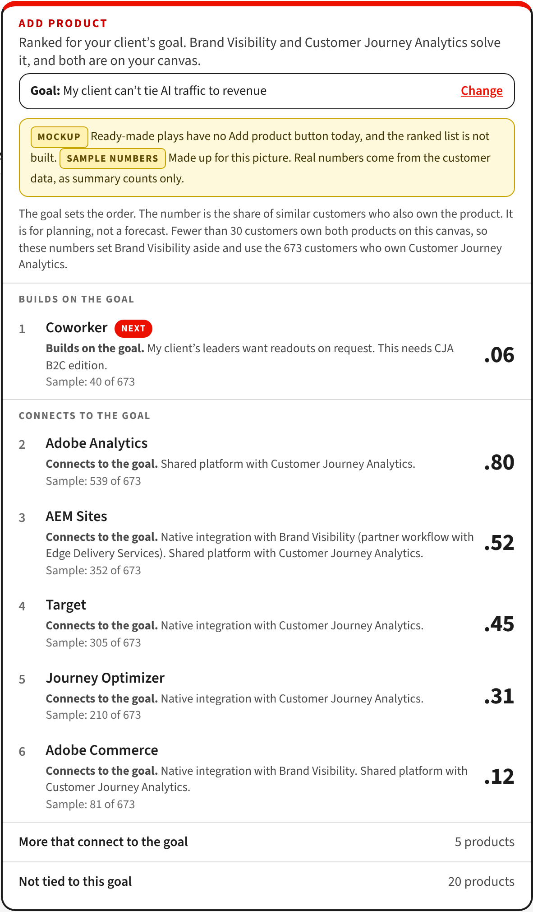
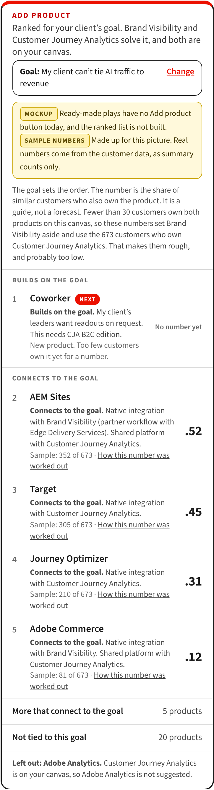

The goal sets the order.
The partner says once what the client is trying to accomplish. Products that solve that goal come first. Next come products that build on it, then products that connect to it. So the highest number is not always first.
Next product
How the tool will rank the next Adobe product for a client. The client’s goal sets the order. A number anyone can redo by hand shows how common the product is among similar customers.
Where this stands. This is the method we propose. It is not in the tool yet. A first look at real customer data was taken on November 17. None of its numbers are on this page: every customer count and every number like .45 here is a sample. With a list of what customers own today, the number shows ownership, not buying.
In short
Two questions get two separate answers. Which product fits this client’s goal? The tool’s own files answer that. How common is that product among similar customers? Customer data answers that.
The partner says once what the client is trying to accomplish. Products that solve that goal come first. Next come products that build on it, then products that connect to it. So the highest number is not always first.
Next to each product is one number between 0 and 1. It is the share of similar customers who also own the product. Similar means customers who own every Adobe product on the canvas. When too few do, the tool sets a product aside and says which. The customer count sits beside the number.
Before partners see a number, we check the numbers against customers we held back from the count. If the numbers do not hold up, the tool keeps the goal order and shows only the share of all customers.
How it works
Six steps. The first two need no customer data. The other four need it. Partners see the list only after the data is loaded and the checks are done, so the list never shows without numbers.
Step 1 · No data needed
The tool asks one question for each canvas: what is your client trying to accomplish? The partner picks one of the 23 client problems already in the tool, or types the goal and confirms the closest of the 23. The answer stays with that canvas until the partner changes it.
Step 2 · No data needed
Solves the goal: the products that problem calls for. Builds on the goal: products added when the partner gives more detail about the client. Connects to the goal: products with a documented connection to one that solves it. Everything else comes last, under “Not tied to this goal”. AEM Sites and AEM Sites with Edge Delivery Services share one row. Products already on the canvas are not listed. When a ready-made play already holds every product that solves the goal, the list starts with products that build on the goal.
Step 3 · Needs customer data
Take the customers who own every Adobe product on the canvas. Count how many of them also own the product. That share is the starting number, and the count is shown beside it. Outside systems, such as a CDN or a CRM, are not in the data and are left out.
Step 4 · Needs customer data
A small group can show 0 or 1 by chance. So we add 10 pretend customers to every group except all customers. They own the product as often as the next larger group does. Large groups barely move. Small groups stop swinging.
Step 5 · Needs customer data
If fewer than 30 customers own every Adobe product on the canvas, the tool sets one product aside at a time until 30 or more remain, and says which it set aside. Products that neither solve the goal nor build on it are set aside first, then the goal’s own products. Within each kind, the product the fewest customers own goes first. If no product is left, the group is all customers. Expect this often when a canvas holds a new product.
Step 6 · Needs customer data
The goal headings come first. Under a heading, the higher number comes first. Each time a product goes on or comes off the canvas, every number is worked out again. The goal stays the same.
A high number does not always mean a good next step. A client does not go back to an older product once it owns the newer one that does the same job. So the list leaves these out, and says so each time. The team keeps the rules.
| When the canvas holds | The list never suggests |
|---|---|
| Customer Journey Analytics | Adobe Analytics |
| Journey Optimizer | Target |
| AEM Sites with Edge Delivery Services | AEM Sites with traditional AEM Publish |
Each rule runs one way. A client with Adobe Analytics can still be offered Customer Journey Analytics. A rule only stops a suggestion. A partner can still add the product by hand, and the tool still shows how the two work together for a client who owns both. On Create your own play the product moves to a “Not suggested” line. Adobe Campaign and Adobe Commerce on-premises are not in the tool, so the list can never suggest them.
The arithmetic
Each number opens to the lines of arithmetic behind it. Here are two, with made-up sample numbers. The canvas is the ready-made play Brand Visibility + Customer Journey Analytics. The goal is “My client can’t tie AI traffic to revenue”.
Where the play fits. For this goal the tool already recommends the play Brand Visibility + Customer Journey Analytics. The list answers the next question: what comes after the play?
A rare combination. In this sample fewer than 30 customers own both products on the canvas. Both products solve the goal, and Brand Visibility has fewer owners in the sample. So the count sets Brand Visibility aside and uses the 673 customers who own Customer Journey Analytics.
Sample numbers Made up to show the arithmetic. They are not customer data.
| Customers counted | Count | Arithmetic |
|---|---|---|
| All customers | 1,001 of 3,000 own Target | 1,001 ÷ 3,000 = 0.3337 |
| Customers who own Customer Journey Analytics | 305 of 673 own Target | (305 + 10 × 0.3337) ÷ (673 + 10) = 0.4514 |
On screen: .45 with “305 of 673”. A line above the list says the 673 are the customers who own Customer Journey Analytics.
Sample numbers Made up to show the arithmetic. They are not customer data.
| Customers counted | Count | Arithmetic |
|---|---|---|
| All customers | 120 of 3,000 own Coworker | 120 ÷ 3,000 = 0.0400 |
| Customers who own Customer Journey Analytics | 40 of 673 own Coworker | (40 + 10 × 0.0400) ÷ (673 + 10) = 0.0592 |
On screen: .06 with “40 of 673”.


Read it right
The meaning depends on the data behind it. The tool will say which one it is, in words, next to the numbers.
With a list of what customers own today
The number is the share of similar customers who own the product today. It describes ownership. It cannot tell which product a customer bought first.
With purchase dates, or two lists a year apart
The number becomes the share of similar customers without the product who bought it within 12 months. Only this version can be checked against what customers went on to buy.
Which one will we have? We will know when the data is read. If it has no purchase dates, a second list a year later is enough to turn the number into a true propensity to buy.
Who similar customers are. They are the accounts in the customer data that own every Adobe product on the canvas, or every product the count keeps when the combination is rare. The tool will name the data and its date. A partner’s client may not look like them. The count treats those products as owned, including ones the partner is only proposing to the client.
Three things the number is not. It is not a forecast for one client. It does not measure the goal: a list of what customers own has no goals in it. It is not a judgment of fit: fit comes from the goal and the documented connections. The goal sets the order. On a rare combination it also decides which product is set aside first, so the customers behind the number can change with the goal.
Before partners see it
Four checks, then four conditions. If the numbers fail, the tool keeps the goal order and shows only the share of all customers.
Check 1
Every number opens to its lines of arithmetic, like the two examples above. Anyone can redo them on a calculator from the counts on the page.
Check 2
We build the counts from half the customers and test them on the other half. When the tool says .25, about 25 in 100 of the similar customers we held back should own the product.
Check 3
We hide one product each held-back customer owns and see if it is among the three highest numbers. The numbers must do this more often than a plain list of the most-owned products. If they do not, we say so and show only the share of all customers.
Check 4 · needs purchase dates or two lists a year apart
We rebuild the counts as they stood 12 months ago, then compare them with what customers bought in the 12 months that followed.
The four conditions. We sort the numbers into ranges, such as .20 to .30. Every range with 500 or more checks lands within 0.05 of what the tool said. The numbers beat the simple list. The privacy check passes: a check will stop the build if the file for the tool holds a group under 30, or anything other than products and counts. The data owner signs off.
What the checks cover. They test the number, not the goal order or the rules set by hand. The goal order comes from the 23 client problems the team wrote and the documented connections, and each reason on screen is the client detail or the documented connection behind it. With a list of what customers own today, the checks show whether the ownership shares are right. Only Check 4 shows what customers went on to buy. The rules set by hand only hide rows. They change no number, and the checks are run without them.
Why counting and not a statistical model? A model might rank better, but nobody can redo its number by hand. The same checks can score a model later.
Customer data
The method needs very little about each customer, and no account ever reaches the tool.
What we need
How it is protected
Today
What is prepared, and what waits for the customer data and for decisions.
Prepared
Not yet
What comes next. First the open choices. Then the customer data. Then the checks. Partners see the list only after the checks are done, the privacy check passes and the data owner signs off. If the numbers fail their checks, the list shows only the share of all customers.